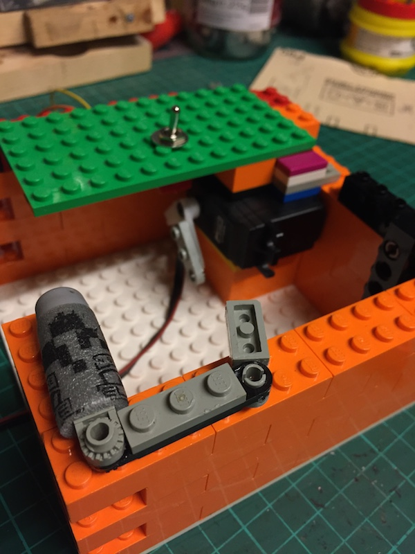

Quick Update
I’ve been looking for a better ‘finger’ for my useless box. A Halloween-style finger would be great, but trying to find one of a suitable size was proving ‘tricky’.
So, after raiding my kids’ toy boxes I found the perfect thing – A Nerf dart! It’s small and light, and fits over my Lego finger ‘skeleton’ easily.
Bosh.

You might also note one of my servos (for controlling the finger) is now in place, and I’ve added a small purple ‘flat’ brick to hold the lid when it is in the closed position.